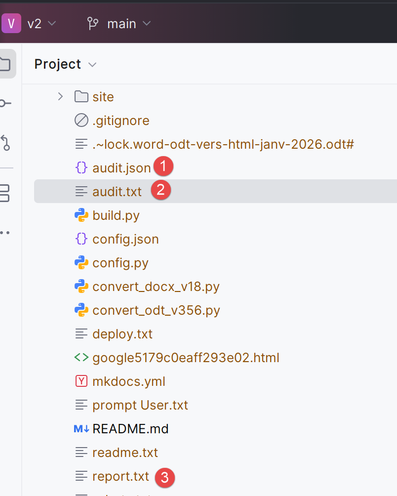
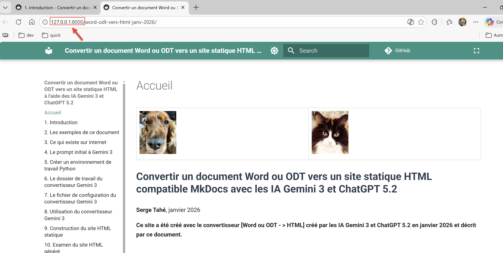

9. Utilisation du convertisseur DOCX → HTML
La commande de conversion d’un document Word DOCX est très analogue à celle de la conversion d’un document LibreOffice ODT. Nous allons modifier le style du titre du document dans [config.py] :
# -------------------------------------------------------------------------
# Détection du Titre du Document
# -------------------------------------------------------------------------
"document_title": {
# Styles ODT à considérer comme le titre principal du document (H1 global)
"style_names": [
"Titre"
],
# CSS appliqué à ce titre dans le Markdown généré
"css": "font-size: 28px; font-weight: bold; margin-bottom: 1em; line-height: 1.2; color: #2c3e50;"
},
- ligne 7 : mettez ‘Titre’. C’est le style du document DOCX que vous allez convertir. Nous le verrons dans les lignes de débogage du convertisseur.
Toujours dans le terminal PyCharm, tapez la commande suivante :
PS C:\Data\st-2025\GitHub Pages\word-odt-vers-html\v2> python .\convert_docx_v18.py .\word-odt-vers-html-janv-2026.docx .\config.py
C:\Data\st-2025\GitHub Pages\word-odt-vers-html\v2\convert_docx_v18.py:976: SyntaxWarning: invalid escape sequence '\h'
- REF Bookmark \h
--- DOCX to MkDocs Converter V16 ---
Copié : google5179c0eaff293e02.html
Copié : robots.txt
Copié : word-odt-vers-html-janv-2026.pdf
Copié : word-odt-vers-html-janv-2026.zip
[DEBUG PRE-H1] style=Standard heading=None rebase=0 numId=None ilvl=None list=None:0/None txt='...'
[DEBUG PRE-H1] style=Standard heading=None rebase=0 numId=None ilvl=None list=None:0/None txt='...'
[DEBUG PRE-H1] style=Standard heading=None rebase=0 numId=None ilvl=None list=None:0/None txt='...'
[DEBUG PRE-H1] style=Standard heading=None rebase=0 numId=None ilvl=None list=None:0/None txt='...'
[DEBUG PRE-H1] style=Standard heading=None rebase=0 numId=None ilvl=None list=None:0/None txt='...'
[DEBUG PRE-H1] style=Standard heading=None rebase=0 numId=None ilvl=None list=None:0/None txt='...'
[DEBUG PRE-H1] style=Standard heading=None rebase=0 numId=None ilvl=None list=None:0/None txt='...'
[DEBUG PRE-H1] style=Standard heading=None rebase=0 numId=None ilvl=None list=None:0/None txt='...'
[DEBUG PRE-H1] style=Standard heading=None rebase=0 numId=None ilvl=None list=None:0/None txt='...'
[DEBUG PRE-H1] style=StandardWW heading=None rebase=0 numId=None ilvl=None list=None:0/None txt='...'
[DEBUG PRE-H1] style=StandardWW heading=None rebase=0 numId=None ilvl=None list=None:0/None txt='...'
[DEBUG PRE-H1] style=Titre heading=None rebase=0 numId=None ilvl=None list=None:0/None txt='<span>Convertir un document Word ou ODT vers un site statique HTML compatible Mk...'
[DEBUG PRE-H1] style=Standard heading=None rebase=0 numId=None ilvl=None list=None:0/None txt='...'
[DEBUG PRE-H1] style=Standard heading=None rebase=0 numId=None ilvl=None list=None:0/None txt='...'
[DEBUG PRE-H1] style=Standard heading=None rebase=0 numId=None ilvl=None list=None:0/None txt='...'
[DEBUG PRE-H1] style=Standard heading=None rebase=0 numId=None ilvl=None list=None:0/None txt='<b>Serge Tahé</b><span>, janvier 2026</span>...'
[DEBUG PRE-H1] style=Standard heading=None rebase=0 numId=None ilvl=None list=None:0/None txt='...'
[DEBUG PRE-H1] style=Standard heading=None rebase=0 numId=None ilvl=None list=None:0/None txt='...'
[DEBUG PRE-H1] style=Standard heading=None rebase=0 numId=None ilvl=None list=None:0/None txt='...'
[DEBUG PRE-H1] style=StandardWW heading=None rebase=0 numId=None ilvl=None list=None:0/None txt='...'
[DEBUG PRE-H1] style=StandardWW heading=None rebase=0 numId=None ilvl=None list=None:0/None txt='...'
[DEBUG PRE-H1] style=StandardWW heading=None rebase=0 numId=None ilvl=None list=None:0/None txt='...'
[DEBUG PRE-H1] style=StandardWW heading=None rebase=0 numId=None ilvl=None list=None:0/None txt='<b>Ce site a été créé avec le convertisseur [Word ou ODT - > HTML] cr...'
[DEBUG PRE-H1] style=Titre1 heading=1 rebase=0 numId=1 ilvl=0 list=numPr:1/ordered txt='<span>Introduction</span>...'
Terminé. (audit.json, audit.txt, report.txt générés)
- ligne 1 : la commande est la suivante : [python .\convert_docx_v18.py .\word-odt-vers-html-janv-2026.docx .\config.py] (Adaptez le numéro de version (ici 18) à la version que vous avez téléchargée.) :
- le premier paramètre [.\convert_docx_v18.py] est le convertisseur DOCX → HTML
- le second paramètre [.\word-odt-vers-html-janv-2026.docx] est le nom du document DOCX à convertir ;
- le troisième paramètre [.\config.py] est le fichier de configuration ;
- ligne 33 : le convertisseur signale que trois fichiers ont été générés :
|  |
Le fichier [audit.txt] est le suivant :
Version: V16
Paragraphs: 2029
Tables: 97
Images (blips): 2
Headings detected (raw): 53
Min heading level detected (raw): 1
Rebase offset applied: 0
Top paragraph styles:
- SourceCodenumrot: 1054
- StandardWW: 594
- Standard: 146
- Paragraphedeliste: 113
- SourceCodenumrotrsultats: 33
- codenouveau: 28
- Titre2: 25
- Titre1: 14
- Titre3: 14
- StandardWWWW: 6
- Textebrut: 1
- Titre: 1
List paragraphs:
- with numPr: 1329
- by style fallback: 49
- not recognized: 0
- ligne 2 : le nombre de paragraphes du document Word ;
- ligne 3 : le nombre de tables ;
- lignes 9-21 : les styles trouvés dans le document ;
- lignes 10, 14, 15 : le style des blocs de code. Un seul style aurait probablement suffi ;
- lignes 11-12, 19 : le style des paragraphes standard. Un seul style aurait probablement suffi ;
- lignes 16-18, 21 : les styles des titres du document. Ligne 21, on voit qu’un seul paragraphe a le style ‘Titre’. C’est le titre du document qui précède le premier ‘Titre1’ ;
Cet audit du document Word est un bon moyen de juger de la qualité du document. Là je vois que j’ai utilisé trop de styles différents pour la même chose dans mon document Word.
Le fichier [audit.json] est identique au fichier [audit.txt] mais sous une forme jSON :
{
"version": "V16",
"file": "word-odt-vers-html-janv-2026.docx",
"counts": {
"paragraphs": 2029,
"tables": 97,
"image_blips": 2,
"headings_raw": 53
},
"lists": {
"with_numpr": 1329,
"by_style": 49,
"unrecognized": 0
},
"heading": {
"min_level_raw": 1,
"rebase_offset": 0
},
"top_styles": [
[
"SourceCodenumrot",
1054
],
[
"StandardWW",
594
],
[
"Standard",
146
],
[
"Paragraphedeliste",
113
],
[
"SourceCodenumrotrsultats",
33
],
[
"codenouveau",
28
],
[
"Titre2",
25
],
[
"Titre1",
14
],
[
"Titre3",
14
],
[
"StandardWWWW",
6
],
[
"Textebrut",
1
],
[
"Titre",
1
]
]
}
Le fichier [report.txt] est celui-ci :
[SUMMARY] Listes détectées via fallback "par style" (agrégé)
- Paragraphedeliste -> level=1 type=unordered: 49
[SUMMARY] Blocs Word ignorés (agrégé)
- <w:sectPr>: 1
Je ne l’ai pas compris…
Il est possible de ne demander que l’audit du document Word pour juger de sa qualité avec le paramètre [--audit] :
python .\convert_docx_v18.py .\word-odt-vers-html-janv-2026.docx .\config.py --audit
Dans ce cas, seul l’audit du document est fait. Le site MkDocs n’est pas généré.
Comme il a été montré précédemment, vous pouvez visualiser le site MkDocs généré par le convertisseur :
PS C:\Data\st-2025\GitHub Pages\word-odt-vers-html\v2> python -m mkdocs serve
INFO - Building documentation...
INFO - Cleaning site directory
INFO - Documentation built in 0.59 seconds
INFO - [06:05:48] Serving on http://127.0.0.1:8000/word-odt-vers-html-janv-2026/
Ctrl-Cliquez sur l’URL de la ligne 5 :
|  |